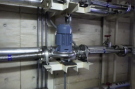

2023年
問題122 給湯設備の保守管理に関する次の記述のうち，最も不適当なものはどれか．
（1）中央式給湯方式においては，加熱により残留塩素が消滅する場合があるため，その水質には留意する．
（2）開放式の貯湯槽においては，外部からの汚染の経路となりやすいマンホールの気密性，オーバフロー管の防虫網の完全性等を点検する．
（3）給湯水の流量を調節するためには，仕切弁を使用する．
（4）使用頻度の少ない給湯栓は，定期的に滞留水の排出を行い，給湯温度の測定を行う．
（5）給湯循環ポンプは，作動確認を兼ねて定期的に分解・清掃を実施する．
2023年
問題122 正解（3） 頻出度AAA
給湯水の流量を調節するためには，玉形弁など流量調節機能のある弁を用いる．仕切弁は全開か全閉で使用する（2022年問題115解説参照）．
-(1) 維持管理が適切に行われており，かつ，未端の給水栓における当該水の水温が55℃度以上に保持されている場合は，水質検査のうち，遊離残留塩素の含有率についての検査を省略しても良い．
-(5) 給湯循環ポンプの例（立形渦巻ポンプ，2023-122-1図）．

出典 株式会社 五幸
https://pump-goko.com/blog/20200616-995/